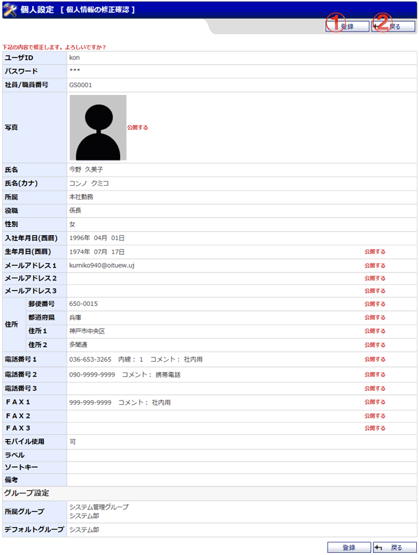

個人情報修正の確認を行う画面です。

機能説明
登録ボタン表示している内容でユーザ情報を登録し、完了画面へ遷移します。 |
戻るボタン遷移元の画面へ遷移します。 |
|---|
表示・入力項目説明
ユーザID
修正画面で入力したユーザIDが表示されます。
管理者権限があるユーザのみ表示されます。
パスワード
修正画面で入力したパスワードが表示されます。
管理者権限があるユーザのみ表示されます。
社員/職員番号
修正画面で入力した社員/職員番号が表示されます。
写真
修正画面で入力した写真が表示されます。
氏名
修正画面で入力した氏名が表示されます。
氏名カナ
修正画面で入力した氏名カナが表示されます。
所属
修正画面で入力した所属が表示されます。
役職
修正画面で入力した役職が表示されます。
性別
修正画面で選択した性別が表示されます。
生年月日(西暦)
修正画面で入力した生年月日(西暦)が表示されます。
メールアドレス１
修正画面で入力したメールアドレス１が表示されます。
メールアドレス２
修正画面で入力したメールアドレス２が表示されます。
メールアドレス３
修正画面で入力したメールアドレス３が表示されます。
郵便番号
修正画面で入力した郵便番号が表示されます。
都道府県
修正画面で入力した都道府県が表示されます。
住所１
修正画面で入力した住所１が表示されます。
住所２
修正画面で入力した住所２が表示されます。
電話番号１
修正画面で入力した電話番号１が表示されます。
電話番号２
修正画面で入力した電話番号２が表示されます。
電話番号３
修正画面で入力した電話番号３が表示されます。
ＦＡＸ１
修正画面で入力したＦＡＸ１が表示されます。
ＦＡＸ２
修正画面で入力したＦＡＸ２が表示されます。
ＦＡＸ３
修正画面で入力したＦＡＸ３が表示されます。
ラベル
修正画面で選択したラベルが表示されます。
ソートキー
修正画面で入力したソートキーが表示されます。
備考
修正画面で入力した備考が表示されます。
所属グループ
修正画面で選択した所属グループが表示されます。
管理者権限があるユーザのみ表示されます。
デフォルトグループ
修正画面で選択したデフォルトグループが表示されます。
管理者権限があるユーザのみ表示されます。